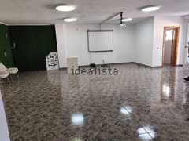

49€165,000#1
? land · 3 bed · 1 bath · 13 min · Murcia Capital
Deal 4.6 · Growth 3.7 · Neighbours 0.2 · Retreat 2.4
49€165,000#1
? land · 3 bed · 1 bath · 13 min · Murcia Capital
Deal 4.6 · Growth 3.7 · Neighbours 0.2 · Retreat 2.4
FAIR: Only if nothing better · paperwork normal
- Price
- €165,000
€175,000 - Plot
- ?
- House
- 476 m²
- Bedrooms
- 3
- Bathrooms
- 1
- To school
- 13 min · 9.7 km
- Pool
- No
- Market value
- €183,000 (10 % below)
- Fair offer
- €152,000
- Area income
- percentile 12 in Spain
- Buildings 300 m
- 3
- Area
- Murcia Capital
- Source
- pisos.com
- Plot size unknown: check Catastro
- Only one bathroom
- Annexes: check in the land registry (nota simple) and Catastro that they are registered